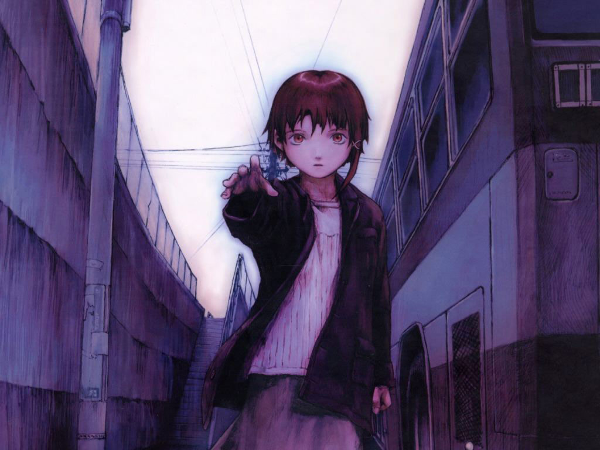
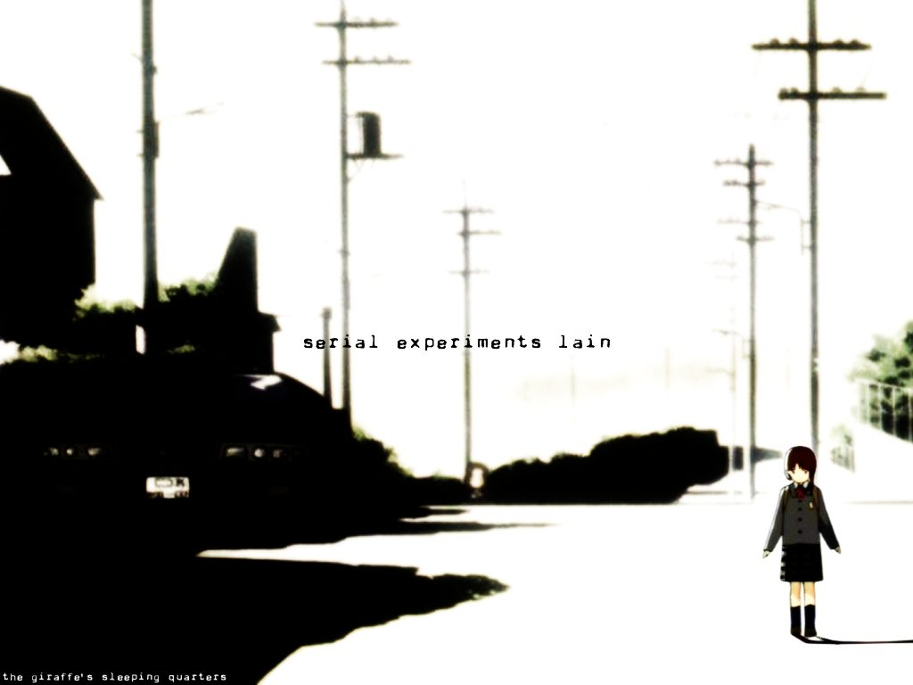

Director: Ryūtarō Nakamura
Production Studio: Triangle Staff
Genres: Mystery, Drama, Sci-Fi, Supernatural, Psychological
Episodes: 13
Aired: Jul 6, 1998 to Sep 28, 1998
Synopsis
Serial Experiments Lain is an avant-garde anime influenced by themes such as reality, identity, and communication. The series focuses on Lain Iwakura, an adolescent girl living in suburban Japan, and her introduction to the Wired, a global communications network similar to the Internet. Lain lives with her middle-class family, which consists of her inexpressive older sister Mika, her emotionally distant mother, and her computer-obsessed father. Lain is herself is somewhat awkward, introverted, and socially isolated from most of her school peers, but the status-quo of her life becomes upturned by a series of bizarre incidents which start to take place after she learns that girls from her school have received an e-mail from Chisa Yomoda, a schoolmate who had committed suicide. When Lain receives the message herself at home, Chisa tells her that she is not dead, but has merely "abandoned her physical body and flesh", and is alive deep within the virtual reality-world of the Wired itself, where she claims to have found God. From this point, Lain is caught up in a series of cryptic and surreal events that see her delving deeper into the mystery of the network in a narrative that explores themes of consciousness, perception, and the nature of reality.
Confused? It's normal.

"There was no reason for me to stay in the real world any longer. In the real world, it didn't matter if I was there or not. When I realized that, I was no longer afraid of losing my body." - Chisa Yomoda
Glass Reflection Review
My thoughts
Serial Experiments Lain is the most confusing show I have ever seen, and I love it. The first lyrics on the opening are "And you don't seem to understand," and I laugh every single time I hear this. You will not understand this show on the first time watching it. It took me two runs through this series to get a descent grasp of the story.
Despite how confusing it is, this show has one of the deepest and most thought-provoking stories I have ever seen in an anime. This show contains many topics from technology obsession, to suicide, to human existence. Serial Experiments Lain is open to any, and all, interpretations. None are right, and none are wrong. How you interpret the show is up to you. The show is so fascinating that people still talk about it. There's a site called Thought Experiments Lain where people post their thoughts about the show along with philosophy and scientific papers helping explain their interpretation.
Many people may get driven away because of how difficult it is to grasp. That's probably the only thing about this show that's understandable. Others may also be driven away from the unique animation style, though I think this actually adds to the show's mood. Serial Experiments Lain is the most frustrating, confusing, and fascinating anime I have seen, and I highly recommend anyone who is capable of grasping its themes to watch it from start to finish.
{kind=link}

"If you can hear it, then it’s speaking to you. And if you can see it, then it’s yours to have."
The Opening
This is my absolute favorite opening of any anime. It fits the show perfectly with it's tone and animation, and it's in English! Every day when I leave for work, the song from this opening is the first song I always play first on my phone.
Episode Links
Thankfully, Funimation has made the entire show available for streaming on YouTube. Horray!